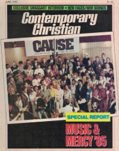

CMnexus
:
Contemporary Christian culture, music, and media.
Browse Magazines
Browse Profiles
cmnexus.org
CM
nexus
→
Profiles
→
C
The Cause
On the cover

June 1985
CCM
Media coverage:
Jun 1985 in
CCM
"'Ya Gotta Do Something!'", by
Ted Ojarovsky
14 Jun 1985 in
Christianity Today
"News: Gospel Artists Unite to Raise Money for African Famine"
Sep 1985 in
CCM
"Three Single Winners", by
Bob Darden
Oct 1985 in
Eternity
"Gallery: Doing Something", by
Richard J Stainslaw
Jul 1986 in
Today's Christian Woman
"Making A Joyful Sound", by
Davin Seay
Fall 1989 in
YouthWorker
"Missions: Music With A Mission", by
Steve Rabey
Mar 2007 in
CCM
"History Makers: Moments that Shaped CCM: One In The Spirit", by
John W. Styll
15 Jan 2015 in
CCM Digital
"We Are United: The Story Behind 'The Greatest Night in Contemporary Christian Music'", by
Kevin Sparkman
Albums & reviews:
1985
:
Do Something Now
Sep 1985 in
Campus Life
Nov 1985 in
Christian Herald
, by
Peter Gross
Dec 1985 in
The Lutheran
, by
Steve Rabey
1985
:
Do Something Now [video]
Nov 1985 in
CCM
, by
Davin Seay
Books about The Cause
"
CAUSE
" in
The Encyclopedia of Contemporary Christian Music
(
Mark Allan Powell
,
2002
)
CMnexus
(noun)
The magazine index
of modern music
and Christianity
© 2011 CMnexus. Last updated September 2019.
Contact:
Rants and other correspondence to:
editor -AT- cmnexus
-DØT- org
About